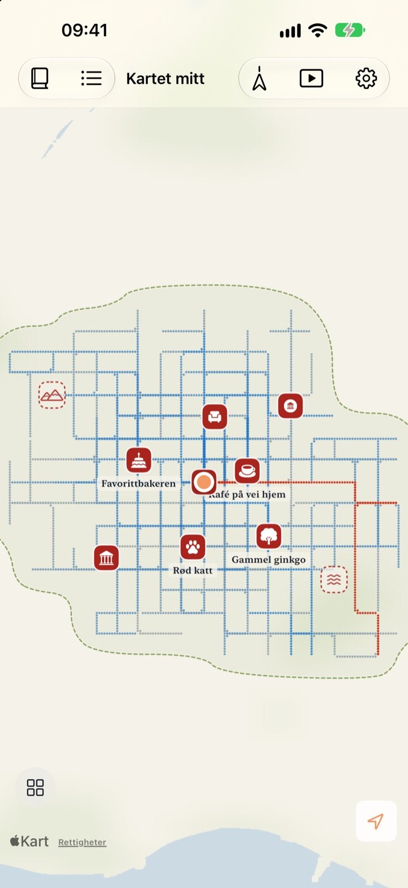
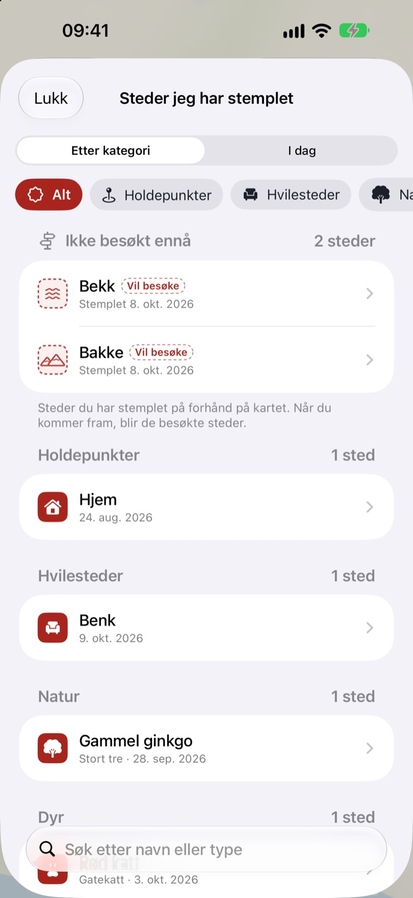
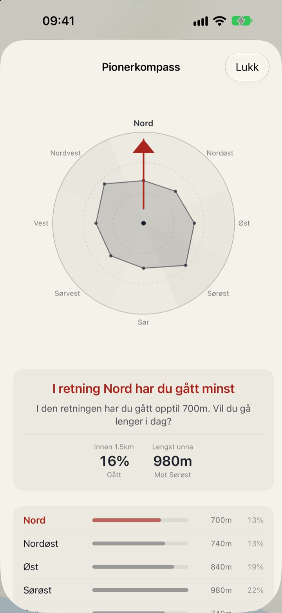
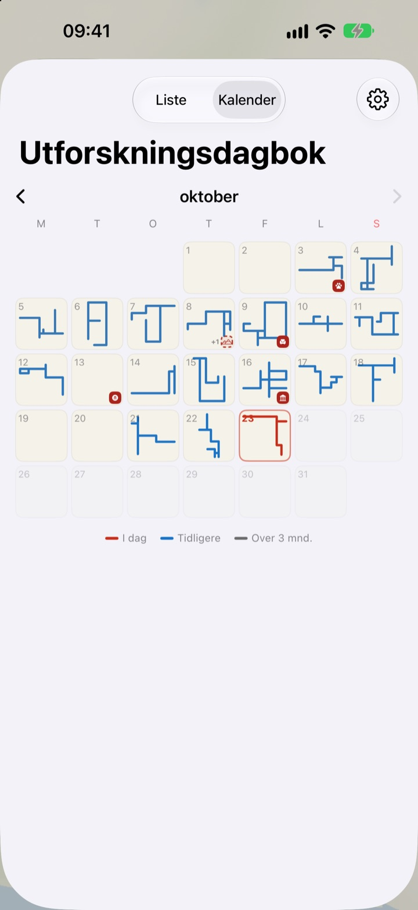

Et kart som bare
fylles ut til fots
Det starter som et blankt papirark. Bare stedene du går, fylles ut, prikk for prikk, og går du den samme gaten hundre ganger, blir det ikke bredere. Vil du at kartet skal vokse, må du ta en ny vei.
Alle funksjoner er gratis og uten reklame.

Gå en tur
Dra med fingeren eller musen over papiret for å gå. De blå prikkene er gater du har gått før. Se hvordan Dagens vei endrer seg når du går i gamle spor, og når du tar en ny retning.
Går du de samme gatene hver dag?
En skritteller teller skritt, men spør aldri hvor de gikk. Hjem til stasjonen og tilbake fyller ringen helt fint, så sidegaten rett ved blir et mysterium i årevis. Buktu Buktu teller bare veier du går for første gang, og det gir deg en grunn til å ta en omvei på ett kvartal i dag.
Stemple steder du har vært og vil til
Stemple der du står, eller hold inne hvor som helst på kartet. Du kan velge mellom 212 stempler, sortert etter kategori.
Et stempel satt der du aldri har gått, blir stående som et sted du vil besøke, og blir til et besøkt sted når du faktisk kommer dit. Ta bilde av et butikkskilt, så klippes bakgrunnen bort, og skiltet reiser seg som et klistremerke på akkurat det stedet.

Neste tur: retningen du har gått minst
Pionerkompass deler området rundt deg i åtte retninger og peker på den du har dekket minst.
Dagens fotspor viser stedene du stoppet i dag i rekkefølge, med hvor langt du gikk mellom dem.

Hver dag etterlater en form
Kalenderen tegner formen på hver dags tur i stedet for et tall. Skriv dagbok med tekst og bilder, og se hvor mye av hver tur som var nytt terreng.
Velg en periode og se kartet ditt bli tegnet som en video du kan eksportere.

Tre trinn for å komme i gang
- 1
Åpne appen
Et blankt papirark brettes ut.
- 2
Tillat posisjon
Velg Alltid og slå på Bevegelse og trening for å registrere turer uten å åpne appen.
- 3
Gå ut
Jo mindre kjent gaten er, jo mer vokser kartet.
Slik leser du kartet
- Røde prikker
- der du gikk i dag
- Indigo prikker
- tidligere skritt, mørkere der du går oftest
- Grå prikker
- steder du ikke har vært tilbake på på over tre måneder. De blekner, men forsvinner aldri
- Stiplet stempel
- et sted du vil besøke. Det blir besøkt når du kommer dit
- Veiene jeg har tegnet
- samlet lengde på alle veier du har gått for første gang
- Dagens vei
- hvor mye av dagens tur som var nytt
- Se alt samlet
- i Innstillinger, åpner Pionerkompass, Dagens fotspor og filmen der kartet tegnes
Velg mellom tuschkartet og Illustrert kart.
Alle funksjoner er gratis
Gratis
- Et kart som bare fylles ut der du går, med oversikt over nye veier
- 212 stempler og klistremerker av butikkskilt
- Pionerkompass og Dagens fotspor
- Kalender og dagbok med tekst og bilder
- Eksporter videoen av kartet ditt mens det tegnes
- Widgeter for Hjem-skjermen og låst skjerm
- Synkronisering mellom enheter via iCloud
Støtt utvikleren
- Gi et lite tips i Innstillinger hvis du har lyst
- Tips låser ikke opp noe. Appen er den samme uansett
Ingen reklame, ikke noe abonnement.
Spørsmål
Jeg gikk en tur, men ingenting dukket opp på kartet.
Gå til Innstillinger > Buktu Buktu > Posisjon, velg Alltid og slå på Bevegelse og trening. Da registreres turer selv når appen er lukket. Hvis du har valgt den batterisparende registreringsmodusen i appens innstillinger, åpner du appen før du går. Posisjoner med lav nøyaktighet lagres, men tegnes ikke.
Blir turer med bil eller T-bane registrert?
Nei. Appen bruker bevegelsesdata og fart til bare å tegne gåing og løping, og utelater strekninger som ser ut som kjøretøy. Den kan av og til ta feil.
Jeg går samme rute hver dag, og kartet vokser ikke.
Det er regelen. Alt innenfor 30 m fra der du allerede har gått, teller som samme vei, så bare veier du går for første gang, legges til i Veiene jeg har tegnet. Fortauet på andre siden av gaten teller også som samme vei. Pionerkompass viser hvor du har gått minst.
Blir posisjonen min sendt noe sted?
Ikke til utvikleren. Skrittene, stemplene, dagboken og bildene dine blir på enheten og i din egen private iCloud, og utvikleren kan ikke se dem. Anonym bruksstatistikk inneholder aldri koordinater, dagbokstekst, stedsnavn eller bilder. Apple Kart brukes til å gjøre koordinater om til stedsnavn. Les mer i personvernerklæringen nedenfor.
Blir registreringene med til en ny enhet?
Ja. Logg inn med samme Apple-konto på den nye enheten og ha iCloud slått på, så følger skritt, stempler, dagbok og bilder med.
Hvordan sletter jeg et stempel eller et bilde?
Slett stempler i listen Steder jeg har stemplet, og hold inne på et bilde i dagboken for å slette det. En måte å slette alle veier og dagboksinnlegg på én gang er planlagt.
Hvordan legger jeg til widgeten?
Hold inne på Hjem-skjermen, trykk på Rediger > Legg til widget og velg Buktu Buktu. På låst skjerm holder du inne og trykker på Tilpass. Widgeten på Hjem-skjermen viser formen og lengden på dagens vei, og låst skjerm viser dagens distanse.
Hva trenger jeg?
En iPhone med iOS 17.0 eller nyere.
Hvordan kontakter jeg dere?
Send tilbakemelding fra appens innstillinger eller send oss en e-post på adressen nedenfor. Vi svarer så snart vi kan.
Spørsmål eller tilbakemeldinger? Skriv til leeo@kakao.com.